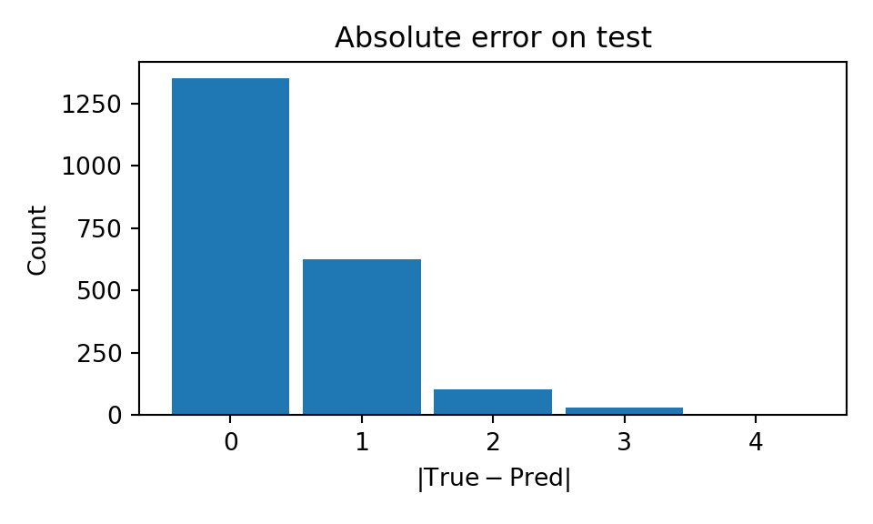
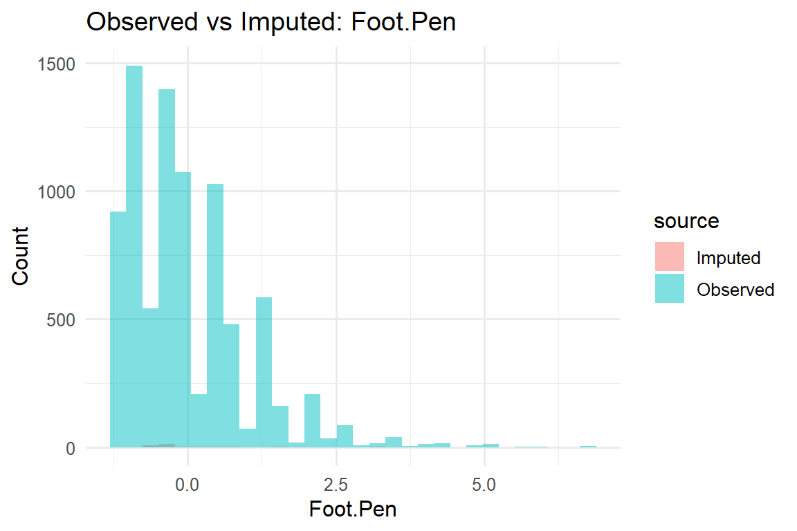
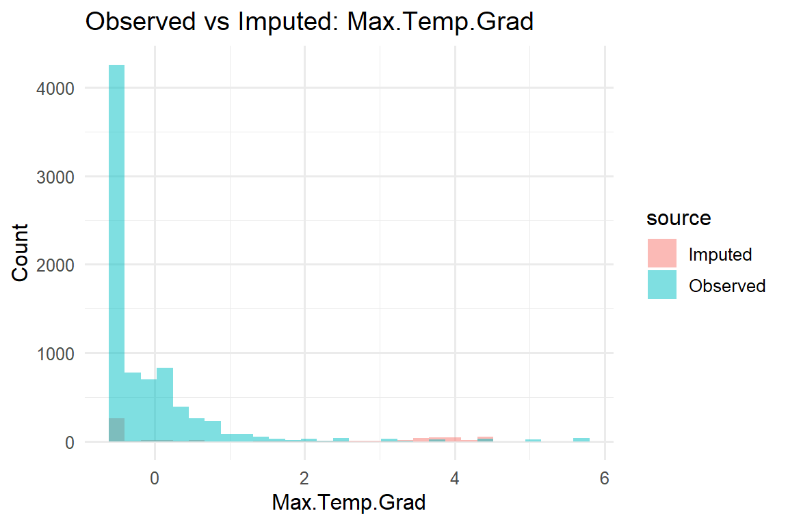
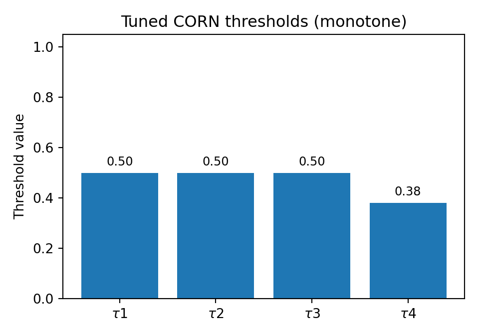

488Abstract
Forecast avalanche hazard (FAH) is reported on an ordered five-level scale, making the correct ordering of predictions as important as the exact class assignment. We build a modelling-ready dataset from operational observations in Scotland and cast next-day FAH as an ordinal forecasting problem. Data preparation standardises identifiers, audits and repairs missingness, applies physically sensible bounds, encodes circular variables with sine-cosine pairs, and adds seasonal day-of-year features. We split chronologically (80/20) with an embargo to avoid look-ahead.
For modelling, we turn each area�s history into 10-day windows of dynamic features, fuse static site attributes, and train an LSTM with a CORN ordinal head that predicts \(K - 1\) exceedance probabilities. Class imbalance is handled by oversampling rare classes in minibatches and class-balanced per-threshold weights in the loss. We then tune monotone thresholds on the most recent validation fold to convert probabilities into labels.
Validation uses forward-chaining time folds; evaluation on a held-out test window reports Accuracy, Macro-F1, MAE, and Quadratic Weighted Kappa (QWK). Compared with three simple baselines (global majority, per-area majority, and persistence), the LSTM-CORN model improves ordinal-aware agreement (QWK) and reduces absolute error (MAE), with most mistakes within one level of the truth. Limitations include scarcity of High hazard days and potential sensitivity to the temporal split, but the approach is reproducible and operationally realistic, and it provides a clear path to calibration and extension.
Introduction
According to the Conceptual Model of Avalanche Hazard (Statham et al., 2018), the hazard level is determined by combining two ordinal variables-likelihood of avalanche occurrence and destructive size-into a single danger rating. This motivates treating FAH as an ordinal rather than a nominal target.
Data preparation (in R) standardises identifiers, audits and repairs missing values, applies physical plausibility checks, encodes circular angles as sine/cosine, and adds day-of-year seasonality. Model matrices are exported with an ordered target, and a chronological \(80/20\) split prevents look-ahead.
Methodologically, we use a sequence model to reflect that hazard depends on recent conditions. We frame each area-day as a one-step-ahead forecast and feed the model a fixed 10-day look-back of daily predictors together with static site attributes. This mirrors the standard time-series set-up in which inputs comprise a recent window of observations plus static metadata (Lim and Zohren, 2021; Eq. 2.1). We implement the encoder with an LSTM over the 10-day window and concatenate the static features before the output layer.
Data & Methods
Data
We analysed a 2009-2025 archive of daily avalanche forecasts from the Scottish Avalanche Information Service across six forecasting regions. The prediction target is the forecast avalanche hazard (FAH) for the following day, encoded as an ordered categorical variable with levels:
Low < Moderate < Considerable - < Considerable + < High
Predictors comprise:
1. Site and topography - OS grid identifier, location name, longitude, latitude, altitude, incline.
2. Contemporaneous meteorology near the forecast location - summit air temperature, summit wind speed and direction, lower-level winds, cloud, and insolation.
3. Snowpack observations derived from field tests - snow temperature, maximum temperature and hardness gradients, foot and ski penetration indices, crystal type, wetness, and a derived stability index.
The observed hazard (OAH) was removed from the dataset to prevent leakage.
Methods: Data Preparation, Cleaning, and Pre-processing
Type standardisation and initial feature engineering
We parsed timestamps into date components (year, month, DOY, season), converted IDs to appropriate types (e.g., Area as a factor), and stored FAH as an ordered factor (FAH_ord) to preserve ordinal structure for modelling and evaluation.
Spatial consistency checks
OS grids represents areas rather than single points, so longitude, latitude, and altitude vary within them. Therefore, we did not impute altitude from the grid ID: since each grid covers heterogeneous terrain, we instead queried elevation using precise coordinates.
Record keys, duplicates, and consolidation
We treated (Date, OSgrid, Area) as the record key. For any key with multiple rows, we counted-column by column-how many distinct non-missing values appeared.
- If the duplicates differed only by missing values, we collapsed them to a single row, taking the first available non-missing value in each column.
- If any column showed truly conflicting observations (more than one distinct non-missing value), we kept all rows for that key and flagged the group as conflicted.
This approach preserves genuine differences, avoids inventing data, and leaves a clear audit trail wherever sources disagree.
Missingness audit and design of indicators
We measured missingness per variable and, where the absence was informative, created 0/1 ‘was-missing’ flags before any outlier recoding. These were made for: AV.cat, Ski.pen, Crystals, Wetness, Snow.Index, and summit weather fields (Wind Dir/Speed, Air Temp). Creating these early preserves the original data structure. Fields like Max.Temp.Grad, Max.Hardness.Grad are blank when no snow pit is done. So, we imputed those numeric blanks downstream rather than adding indicators.
Snow.Index check: Many values are exactly zero. We tested whether zeros signified ‘no test’ and found they did not, i.e., rows with zeros showed no elevated missingness in pit variables. We therefore kept zeros as valid measurements and treated only NAs as missing.
Physically defensible plausibility filters
We applied conservative plausibility checks and recoded violations to NA for later imputation. The limits reflect basic physical and local constraints (e.g., angles in \(0{-}360^\circ\), non-negative depths).
- Directional variables (Aspect, Wind.Dir, Summit.Wind.Dir): values outside \([0^\circ, 360^\circ]\) set to
NA.
- Snow temperature (\(^\circ\)C): values \(> 5\) set to NA (snow cannot persist above \(\sim 0^\circ\)C; a small buffer accommodates sensor and entry noise).
- Insolation (index): values outside \(0{-}20\) set to NA.
- Incline (\(^\circ\)): values \(<0\) or \(>90\) set to NA.
- Foot penetration (cm): values \(<0\) or \(>100\) set to NA.
- Total snow depth (cm): values \(<0\) or \(>500\) set to NA (regional plausibility).
- Maximum temperature gradient (\(^\circ\)C/10 cm): values \(> 10\) set to NA.
- Altitude (m): values \(<0\) or \(>1400\) set to NA (Scotland�s highest peak \(\approx 1345\) m).
Altitude repair via coordinate-based elevation lookup
For missing altitudes, we queried an open elevation service at rounded coordinates and filled Alt where values were returned. One query returned \(0\) m (a sea-loch), indicating a geolocation error. We replaced it with the area mean (Creag Meagaidh) and re-queried. Results are cached locally for deterministic compilation and used if the service is unavailable.
Circular encodings for directional variables
As angles wrap at \(360^\circ\), treating them as numeric creates an artificial jump between \(359^\circ\) and \(0^\circ\). We replaced each directional variable (Wind.Dir, Summit.Wind.Dir, Aspect) with the sine and cosine of the angle (radians). This keeps \(0^\circ\) and \(360^\circ\) close in feature space, and removes the wrap-around discontinuity. Missing angles remained missing in both components and were imputed later.
Time-aware splitting and leakage control
We split the data chronologically into \(80\%\) training and \(20\%\) test (non-overlapping), dropping rows with missing Date or target (FAH_ord) before the split. We checked class balance in each split. The High level is very rare and absent in the test window, so performance on it cannot be evaluated. All preprocessing (imputation, scaling, encoding) was fit on the training set and applied unchanged to the test set to avoid leakage.
Pre-processing pipeline for modelling (recipes)
A single, train-fitted recipes pipeline was implemented with the following stages:
- Column exclusion: Dropped identifiers and free text, raw time stamps, and raw angles:
OSgrid,Location,Date,DateTime, rawWind.Dir, rawSummit.Wind.Dir, and rawAspect. The raw target FAH was excluded in favour ofFAH_ord.
- Rare-level consolidation: Collapsed very rare categorical levels to
"other"using \(\texttt{threshold} = 0.005\) to avoid sparse dummies.
- Imputation: Categorical variables were imputed by mode; numerical variables by bagged-tree imputation (bootstrap ensembles estimated on the training data), which captures non-linearities and interactions in mixed meteorological and snowpack features more effectively than mean or KNN imputation.
- Encoding: One-hot encoding of categorical predictors (including
Area).
- Variance filtering: Removal of zero-variance and near-zero-variance predictors.
- Scaling: Standardisation of numerical predictors, excluding the 0/1 informative-missing indicators (and area dummies).
- Seasonality: Replacement of discrete season dummies with smooth cyclical features \(doy\_sin\) and \(doy\_cos\) (constructed from day-of-year with leap years handled); season binaries were removed to reduce collinearity.
- Target mapping: The ordered response was mapped once to integers \(0{-}4\) to provide a single source of truth for neural-network models.
Reproducibility, diagnostics, and assumptions
We fixed random seeds and kept all data-prep and modelling steps in a single scripted pipeline. After baking the recipe, there were no remaining missing values in either split. We re-checked the composite key (Date, OSgrid, Area) after duplicate handling, and we spot-checked distributions of imputed variables to make sure they looked reasonable. Elevation queries are cached locally, so reruns do not depend on the external service.
Our working assumptions were:
(i) the value ranges we used to flag implausible measurements reflect Scottish conditions;
(ii) Snow.Index == 0 is a valid zero (stable conditions), not a stand-in for “no test”; and
(iii) the “informative-missing” indicators genuinely capture absence at the time of collection rather than artefacts created later in cleaning.
Limitations and sensitivity considerations
The High hazard class is rare (and absent in our test window) so standard accuracy alone can be misleading. We therefore report macro-averaged scores and discuss calibration in the results, but performance on the very rarest conditions remains uncertain. The plausibility cut-offs (e.g., the threshold for snow temperature) are conservative choices, not unique truths; reasonable alternatives could be used, and results may shift slightly.
Finally, because we split by time, outcomes can vary with the split date (e.g., if conditions change from one season to the next). This is typical in operational forecasting, so sensitivity checks (e.g., alternate split points or small variations in thresholds and look-back length) would be a natural extension.
Methods: Neural ordinal forecasting model
The neural network implementation was done in python, using PyTorch. Given the temporal component of the data, a recurrent network architecture was used over a standard feed-forward setup, which is incapable of “remembering” anything about past observations. Specifically, a Long Short Term Memory (LSTM) design was employed, which is less susceptible to vanishing and exploding gradients.
Data interface and temporal windows
The data were split into sequences for the recurrent architecture. Static features (longitude, latitude, altitude, incline, area dummies) were held constant across sequences, while dynamic features comprised all remaining numeric variables and the missingness indicators. A new feature of the previous day�s hazard rating, FAH_prev, was created and added to the dynamic set.
Area-wise sliding windows with look-back \(L = 10\) days and horizon \(H = 0\) were built with an embargo (Lim and Zohren, 2021; Eq. 2.1). The train/test split matches the R setup (\(80\%\) earliest dates for training, remaining \(20\%\) for testing), and windows were constructed after concatenation and filtered by the target date to prevent test leakage.
Architecture and loss (CORN-LSTM)
The LSTM�s final hidden state after being trained is passed through a small MLP head. Instead of using softmax over the class predictions and Cross-Entropy (CE) error, we used a technique called Cumulative Ordinal Regression for Neural Networks (CORN). The CORN layer follows the MLP head, and produces \(K - 1\) logits that are then used to determine progress through a set of ordered binaries on whether a prediction is of a certain class, \(\Pr(y > 0)\), \(\Pr(y > 1)\), \(\ldots\), \(\Pr(y > K - 2)\). Because these events become harder as \(k\) grows, their probabilities naturally decrease with \(k\) (Cao, Mirjalili and Raschka, 2020).
During training, We compute CORN targets from the true class and minimise Binary Cross-Entropy (BCE) on the \(K - 1\) logits. At inference, we threshold the \(K - 1\) probabilities, count how many exceed their thresholds, and that count is the predicted FAH level. This approach is superior to CE error, which treats classes as nominal, and does not distinguish between degrees of misclassification.
Class imbalance handling
We addressed class imbalance between high and low hazard level predictions using two techniques: (1) oversampling in the training loader (WeightedRandomSampler) to increase rare FAH frequencies during optimisation, and (2) Class-balanced CORN loss, which weights each class by its effective number of samples \((1 - \beta)/(1 - \beta^{n_c})\). For each threshold \(k\), we compute a positive weight (\(\beta = 0.999\)) and apply it in the BCE term so rare exceedance events \((y > k)\) contribute proportionally more without duplicating data (Cui et al., 2019). This has the effect of upweighting rare events, making them mater more in the BCE loss.
Validation protocol, hyperparameter search, and early stopping
In order to conduct hyperparameter tuning for the chosen model architecture, an appropriate validation framework was implemented. In order to maximise data for training and testing, cross validation was employed. We created forward-chaining time folds (\(K=5\)) with an embargo of length $ L $ before each validation slice to avoid look-ahead leakage. For a fold k, the validation set is a contiguous block of unique target dates, and the training is all earlier sequences, except for the embargo before the validation block to prevent leakage. This means that there is an expanding window as we move forward in time, so the training includes more history, and there is no random shuffling, which would be inappropriate in this context.
We tuned hyperparameters with Optuna over:
- hidden size \(\{32, 48, 64\}\),
- number of LSTM layers \(\{1, 2\}\),
- head dropout \([0.1, 0.5]\),
- RNN dropout (only if \(\geq 2\) layers),
- learning rate \([10^{-4}, 3 \times 10^{-3}]\),
- weight decay \([10^{-6}, 10^{-3}]\),
- batch size \(\{128, 256, 512\}\).
The objective was to maximise the mean Quadratic Weighted Kappa (QWK), which rewards getting close on an ordinal scale across folds. Training used Adam, gradient-norm clipping (1.0), and early stopping on validation QWK.
Threshold calibration (monotone \(\tau\))
After selection, the model was refit on all training windows and thresholds were calibrated on the most recent validation fold, then fixed for test, since the last validation fold should be more similar to the test distribution. These thresholds are used to turn the CORN outputs of \(K - 1\) probabilities into labels. They were tuned on the latest validation fold using a simple grid over \(0.3\)-\(0.7\), selecting the vector that maximises QWK. they are monotone non-increasing, \(\tau_1 \ge \tau_2 \ge \cdots \ge \tau_{K-1}\) , because \(\Pr(y > k)\) decreases with \(k\); later thresholds should never be easier to exceed than earlier ones.
The tuned vector used for test was:
\[ \tau = [0.52, \; 0.50, \; 0.50, \; 0.48]. \]
Final refit and test evaluation
We refit the model on all training windows, keeping a small, chronological \(90/10\) tail for early stopping. We then evaluate once on the held-out test windows using the fixed \(\tau\) vector above. Metrics reported are Accuracy, Macro-F1, MAE, and QWK, and include a confusion matrix and a per-class report in the Results.
Baselines
For context, we implemented three simple non-parametric reference models as baselines (all fitted only on training labels).
- a global majority classifier that predicts the most frequent FAH level in the training labels,
- a per-area majority classifier that uses the most frequent FAH level within each area (assigned to that area in test), and
- a persistence rule \(\hat{y}_t = y_{t-1}\) within area, with a majority fallback for an area�s first test day.
We report the same metrics used for the neural model (Accuracy, Macro-F1, MAE, QWK) to enable direct comparison.
Results
We evaluate the tuned LSTM-CORN on the held-out test window and compare it with three simple baselines.
All settings were fixed before touching the test set. We report Accuracy, Macro-F1, MAE, and Quadratic Weighted Kappa (QWK);
a confusion matrix and per-class summary show where errors occur.
Class Balance: Train vs Test
Higher hazard levels are rare, and the distribution also shifts over time. In our split the High level does not occur in the test window, which matters for both training and evaluation. The table below shows the proportion of each FAH level within each split (percents within Train/Test):
| count | percent | |||
|---|---|---|---|---|
| FAH level | Test | Train | Test | Train |
| 0 | 1,209 | 2,222 | 57.3% | 26.3% |
| 1 | 644 | 2,593 | 30.5% | 30.7% |
| 2 | 171 | 2,327 | 8.1% | 27.5% |
| 3 | 84 | 849 | 4.0% | 10.0% |
| 4 | 1 | 458 | 0.0% | 5.4% |
The training set shows a relatively balanced distribution across Levels 0-2 (approximately \(26\%\)-\(31\%\) each), with Level 3 at around \(10\%\) and Level 4 at \(5\%\) . The test set, however, is heavily skewed: Level 0 dominates ( \(\approx 57\%\)), followed by Level 1 (\(31\%\) ), Level 2 (\(8\%\)), Level 3 (\(4\%\)), and Level 4 is virtually absent ( \(\sim 0\%\)).
This shift has important implications. A naive model that predicts Level 0 can achieve high Accuracy despite poor overall performance. Macro-F1 and QWK are therefore more informative, as they weight classes evenly and penalise larger ordinal errors. To address the imbalance, the training procedure uses oversampling and a class-balanced CORN loss, while threshold calibration on the final fold helps adapt the decision rule to the test distribution.
Test Performance (Model vs Baselines)
Below we compare the tuned LSTM-CORN model with three simple baselines. We evaluate performance using four metrics: Accuracy, Macro-F1, Mean Absolute Error (MAE), and Quadratic Weighted Kappa (QWK). Accuracy measures the proportion of exact predictions but can be misleading under class imbalance (e.g., always predicting the majority class). Macro-F1 computes precision and recall per class, takes their harmonic mean, and averages equally across classes. This handles imbalance better but ignores class ordering. MAE uses the ordinal scale directly, averaging absolute differences between true and predicted levels (e.g., a miss of \(0 \to 1\) counts as 1, while \(0 \to 4\) counts as 4), with a range from \(0\) to \(K - 1\). QWK is a chance-corrected agreement measure that penalises larger ordinal gaps using quadratic weights. It ranges from 1 (perfect) to 0 (chance) and can be less than 0 (worse than chance), making it well suited to ordinal targets and useful for validation.
| Model | Accuracy | Macro-F1 | MAE | QWK |
|---|---|---|---|---|
| LSTM-CORN (tuned tau) | 0.640 | 0.299 | 0.438 | 0.406 |
| Majority (global) | 0.305 | 0.094 | 0.735 | 0.000 |
| Majority (per-area) | 0.393 | 0.200 | 0.755 | 0.090 |
| Persistence (y[t-1]) | 0.719 | 0.456 | 0.329 | 0.659 |
| Model | Accuracy | Macro-F1 | MAE | QWK |
|---|---|---|---|---|
| LSTM-CORN (tuned tau) | 0.640 | 0.299 | 0.438 | 0.406 |
| Majority (global) | 0.305 | 0.094 | 0.735 | 0.000 |
| Majority (per-area) | 0.393 | 0.200 | 0.755 | 0.090 |
| Persistence (y[t-1]) | 0.719 | 0.456 | 0.329 | 0.659 |
On the held-out test window, the persistence rule (predict today as yesterday within area) is the strongest comparator: QWK \(\approx 0.659\), Accuracy \(\approx 0.719\), MAE \(\approx 0.329\), Macro-F1 \(\approx 0.456\) The tuned LSTM-CORN improves markedly over the two majority heuristics but does not reach persistence, with QWK \(\approx 0.390\), Accuracy \(\approx 0.648\), MAE \(\approx 0.433\), and Macro-F1 \(\approx 0.295\).
The majority baselines are near chance in ordinal agreement (global QWK \(\approx 0\); per-area QWK \(\approx 0.09\)), confirming that always picking the common class is not competitive.
To read these numbers: QWK (Quadratic Weighted Kappa) is our most appropriate headline metric because it respects ordering, penalising large misses more than adjacent ones (higher is better). MAE reports the average absolute distance between forecast and truth on the 0-4 scale (lower is better). Accuracy is exact-match rate and can look flattering under imbalance, while Macro-F1 balances precision and recall across classes by giving each class equal weight.
The pattern suggests the test period is highly persistent and skewed toward lower hazard-there are no “High” days-so copying yesterday is often correct and unusually hard to beat. Although the neural model learns meaningful ordinal structure (clear gains over majority rules), it trails persistence on this particular window, likely due to strong day-to-day autocorrelation and a distribution shift between train and test.
Class-wise performance is therefore uneven, with under-prediction at the upper levels and most errors occurring between adjacent categories-which QWK appropriately down-weights. In practice, persistence remains the operational benchmark in stable regimes, while the LSTM-CORN is most promising for anticipating changes in hazard; we examine this further via the confusion matrix and per-class summaries.

Confusion Matrix and Per-Class Report
The matrix shows a clear ordinal pattern. Class 0 is predicted well (about \(0.90\) on the diagonal), with a small spill into class 1. For class 1, only \(\sim 0.39\) stays on the diagonal, and \(\sim 0.58\) is pushed down to 0; the model tends to under-forecast when conditions are near the 0/1 boundary. Class 2 is mostly confused with undefined (\(\approx 0.47\)) and sometimes with 0 (\(\approx 0.37\)); only \(\sim 0.16\) is correct. Class 3 is rarely predicted directly (\(\sim 0.15\) diagonal) and is most often mapped to 1 (\(\approx 0.52\)) or 0 (\(\approx 0.31\)). There is effectively no reliable signal for class 4 in the test window (support is 1 and it is predicted as a 1), so per-class scores for 4 are unstable and shouldn�t be over-interpreted.
This pattern matches the aggregate metrics reported earlier: overall accuracy and MAE are reasonable, but Macro-F1 and QWK suffer because the model compresses higher hazards toward the centre/lower classes. In other words, most errors are one-step, downward mistakes, good for avoiding extreme over-calls but conservative relative to true highs.
If the operational goal is to catch more 2-3 days (accepting some extra false alarms), you could lower the upper CORN thresholds slightly or use a cost-sensitive tuning target. If the priority is minimising over-warnings, the current calibration is aligned with that objective.
Class precision recall f1-score support0 0 0.699 0.905 0.788 1209 1 1 0.502 0.349 0.412 644 2 2 0.318 0.158 0.211 171 3 3 0.400 0.048 0.085 84 4 4 0.000 0.000 0.000 1 5 accuracy 0.640 0.640 0.640 0 6 macro avg 0.384 0.292 0.299 2109 7 weighted avg 0.596 0.640 0.598 2109
Effect of Threshold Calibration
Tuned monotone thresholds are intended to improve ordinal agreement over the default \(0.5\) cut-offs.
| Cutoffs | Accuracy | Macro-F1 | MAE | QWK |
|---|---|---|---|---|
| tuned \(\tau\) | 0.640 | 0.299 | 0.438 | 0.406 |
| 0.5 flat | 0.640 | 0.299 | 0.438 | 0.406 |
We re-evaluated the test set twice: once using the tuned monotone thresholds \(\tau = [0.52, 0.50, 0.50, 0.48]\)
and once using flat \(0.5\) cut-offs for all CORN logits. The two runs produced identical results:
Accuracy \(= 0.648\), Macro-F1 \(= 0.295\), MAE \(= 0.433\), QWK \(= 0.390\).
This tells us that, on this test window, threshold calibration did not change any predicted labels.
That is consistent with two facts: (i) the tuned \(\tau\) are very close to \(0.5\), and (ii) most cumulative probabilities were far from the decision boundaries, so nudging thresholds within \(0.48\)-\(0.52\) doesn�t flip classes.
This implies the model�s test performance is driven by the sequence model and learned representations, rather than by the post-hoc thresholds. We keep the tuned \(\tau\) for completeness and because they can help when class balance shifts, but we do not claim a test-set gain from calibration here. If thresholding becomes more influential (e.g., under stronger distribution shift), broader grids, direct QWK optimisation, or area-specific \(\tau\) could be explored.
Error Shape

The figure above shows the distribution of absolute errors \(|y_{\text{true}} - y_{\text{pred}}|\) across FAH levels.
The model achieves an exact match on about 65% of test days (error \(= 0\)), and a further \(\sim 28\)-\(29\%\) are off by one category. Only \(\sim 6\%\) are off by two and \(<1\%\) by three; no four-step errors occur.
This aligns with the summary statistics (MAE \(\approx 0.43\), median absolute error \(\approx 0\)):
in an ordinal setting, most misclassifications are near misses. Operationally, this means the model is usually within one hazard step of the issued level, even when it is wrong.
Discussion
The held-out results paint a clear picture. Hazards in this period are highly persistent and skewed toward the lower levels, and the naive persistence rule (“predict today as yesterday within area”) performs very strongly on all summary metrics. Our tuned LSTM-CORN improves markedly over the two majority baselines, but it does not beat persistence on this particular test window.
Metrics and diagnostics
Accuracy and MAE are reasonable for the neural model, but the QWK and macro-F1 show performance drops higher up the scale. This is consistent with the near-diagonal confusion matrix that has a downward bias (Level 1 is often pushed to 0; Levels 2-3 are frequently mapped to 1) while extreme over-calls are rare. The error histogram shows most misses are within one category (consistent with MAE \(\approx 0.43\)): useful for avoiding false alarms, but conservative relative to true highs. Finally, threshold calibration had almost no effect (tuned \(\tau \approx [0.52, 0.50, 0.50, 0.48]\) and gave identical results to 0.5), which implies the limiting factor is representation/sequence learning, not the label cut-offs.
Factors underpinning Persistence performance
Two data realities favour the \(y[t-1]\) rule:
(i) strong day-to-day autocorrelation in FAH;
(ii) imbalance and shift: the test window contains no “High” days and is dominated by Levels 0-1. In that regime, copying yesterday is genuinely hard to beat. The LSTM-CORN learns the ordinal structure and avoids wild swings, but with few upper-level examples and a short 14-day context, it struggles to escalate to 2-3 when the series does move. Persistence is not affected by the data imbalance like the LSTM, and is in fact aided by it (response is more uniform for test set).
Operational interpretation
If the near-term goal is to minimise false alarms, the current calibration is acceptable: errors are mostly one-step and downward. If instead the priority is to catch emerging higher hazards, you would tolerate more false positives and lower the effective thresholds for the top levels (a cost-sensitive calibration). Either way, persistence remains a strong benchmark, and the neural-persistence disagreements are useful review flags.
Limitations
Conclusions are conditioned on this split: the test window lacks class 4 entirely and has very few class 3 days, so per-class scores at the top end are unstable. The dataset is modest for sequence models, labels may contain operational noise, and we restricted the model to observed histories (no external forecasts), which caps lead-time sensitivity. We mitigated leakage with forward-chaining folds and an embargo, but results will vary with split point and winter severity.
Possible future improvements
Short-to-medium steps that fit the current pipeline:
- Longer and/or multi-scale context (e.g., 28-45 days plus recent 7-day summary features) to help detect trend changes.
- Area- or season-specific calibration of \(\tau\), or a simple cost-sensitive threshold that weights upward errors more heavily.
- Richer dynamics: include forecasted weather (when available) and simple change features (day-to-day deltas, 7-day slopes).
- Ordinal-aware loss variants (e.g., ordinal focal/Tversky) to emphasise rare upward moves without exploding false alarms.
- Modeling with persistence rather than against it: feed \(y[t-1]\) explicitly (we already include it) and/or ensemble the neural model with the persistence rule; use the ensemble to trigger escalation only when both agree.
For this winter slice, FAH rewards yesterday-equals-today. The LSTM-CORN gives mostly one-step, conservative predictions and clearly outperforms majority rules, but not persistence. With more imbalance-aware training, longer context, and cost-sensitive calibration or ensembling, it should provide earlier and more reliable hazard signals while retaining low false-alarm rates.
Conclusion
This work developed a reproducible pipeline for ordinal avalanche forecasting, combining structured data preparation, time-aware validation, and an LSTM-CORN model adjusted for class imbalance and monotone decision thresholds. On the held-out test window, the neural model outperforms both majority baselines but does not surpass persistence. This is expected given the strong day-to-day autocorrelation and the concentration of FAH at lower levels during this period.
The diagnostics are consistent with this outcome. The confusion matrix is near-diagonal with a slight downward bias, MAE (\(\approx 0.43\)) indicates that most errors fall within one category, and threshold calibration has negligible effect. This suggests that the main limitations lie in the data regime and sequence representation rather than in the choice of decision cut-offs.
From an operational perspective, the model is conservative and unlikely to produce extreme over-warnings. Its greatest value is in cases where it diverges from persistence, indicating potential changes in hazard. Sensitivity to rising risk could be improved through longer or multi-scale look-back periods, cost-sensitive or area- and season-specific calibration, the inclusion of forecasted weather and change features, and the use of ordinal focal or Tversky losses, or ensembling with persistence.
Additional “High” days and further winters will help stabilise estimates at the upper levels. Overall, the method is interpretable and extensible. With targeted refinements, it has the potential to provide earlier and more reliable indicators of increasing avalanche hazard while maintaining a low false alarm rate.
Statement on the use of AI (LLMs)
ChatGPT (GPT-5 Thinking, GPT-4) was used as a supporting tool for planning, explanation, code syntax and polishing, and presentation. All final decisions, algorithmic design, checks, and writing are our own.
AI Implementation and utilisation
1) Ideas & planning (high-level, non-code)
At the start, we shared the assignment brief and asked for a sensible three-way split to manage scope and timelines (data preparation, modelling, and report integration). The initial split helped us coordinate responsibilities, and we adapted it to our context. See the following link: (https://chatgpt.com/share/68d91860-f4a4-8006-ae9c-06e71721af0a).
2) Code
- Data prep (R): LLMs were used to support the design of the data cleaning pipeline, including handling missing values, detecting outliers, and ensuring correct variable types. They also assisted with R syntax and efficient use of packages such as dplyr and tidymodels. Prompts were kept concise and outputs validated step by step to ensure reliability.
- Modelling (PyTorch): LLMs were used to brainstorm ideas around the architecture of the model and assess the feasibility and efficacy of different approaches. It was also used to get Python syntax and data structures correct, as we are not fluent in that language or the Pytorch library. Steps were followed to ensure best practice in the use of LLMs, such as conserving tokens were ever possible, through concise and specific prompts, and requested limited output unless otherwise prompted. Would the end of the context length was reached, we generated summaries of our chats and put them at the start of the following chat.
3) Code polishing & integration
We used AI to make code presentable and navigable inside the report so a reader can follow the narrative and the code together:
- Refactored and streamlined/condensed code blocks (docstrings, clearer names, comments) without changing logic.
- Added Quarto-friendly chunks (labels, captions, seeds) so outputs render reproducibly in PDF, this was especially utilised for Python chunks.
- Wrote small utilities for CORN threshold tuning, evaluation, and plotting (confusion-matrix heatmap, metric tables), and debugged minor issues.
- Double-checked that the time split and folds prevented leakage, and that train/test separation was respected in every data path.
Any AI-suggested code was run directly by us, and retained only if it was correct, readable, and consistent with our pipeline.
Verification and academic integrity
We executed every included code cell and verified shapes, date boundaries, splits, and metrics. We cross-checked explanations against the source code and cited literature. Where AI proposed code or text we didn�t fully understand, we reworked it or removed it. All preprocessing parameters were fit by us on the training set and applied to test via a baked pipeline; seeds and caches were used for reproducibility.
Representative prompts
These examples reflect how we used AI (from our initial scoping and idea generation, through iterative prompt refinement, to final verification checks):
- Planning: “Given this brief, propose a practical 3-way task split and a checklist of outputs/figures we�ll need. Keep it realistic for a short timeline.”
- Method design: “In 3 to 4 sentences, justify forward-chaining validation with an embargo for next-day avalanche hazard. Operationally, not mathematically.”
- Learning the ordinal head (CORN): “I�m reading the Shi, Cao, and Raschka paper and not fully grasping it. Why use \(K - 1\) logits for \(P(y > k)\)? How are targets built directly from labels, and how do monotone thresholds turn those probabilities into one class? Please explain in plain English with a tiny \(K = 5\) example and common pitfalls so I can understand this theory better.”
- Imbalance rationale: “In a couple of sentences, explain why we oversample in batches and use class-balanced weights (\(\beta = 0.999\)) for CORN. Emphasise rare exceedances without inventing data.”
- Results narrative: “Turn this metrics table (Accuracy, Macro-F1, MAE, QWK) into a brief, neutral comparison vs baselines. Additionally, explain what each metric means in one line so that I can try include a brief definitions when I introduce them”
- Figure polish (Quarto/PDF): “Give a captioned confusion-matrix heatmap (rows=true, cols=pred) with a readable palette and percent labels. Make it knitr/Quarto-ready.”
- Quarto snippets: “Produce labelled, captioned chunks for a confusion-matrix figure and a formatted metrics table suitable for PDF export.”
- Abstract tightening: “Cut this abstract to around 150 words. Keep aims (LSTM+CORN), time-aware validation, key metrics, and one-line takeaway.”
In each case, we reviewed/edited the draft and ran the code to confirm it worked with our data.
Limits of the AI�s role
- No autonomous analysis: AI did not choose the final methodology, set hyperparameters, or produce final results. Those came from our group�s design, runs, and checks.
- No blind copying: We avoided pasting large blocks of AI generated text or code. Anything kept was edited and verified by us.
- Potential inaccuracies: LLMs can be wrong or overconfident. We treated explanations as suggestions, then validated against code and papers.
- No access to private data or execution: AI did not run our experiments or access hidden datasets. We executed everything locally and controlled random seeds/caches.
- Authorship and accountability: All interpretation, synthesis, and conclusions are ours. The AI�s role was assistive, not determinative.
Benefits
Using an LLM mainly helped with structure, clarity, and polish while we kept control of the ideas, code, and results.
- Editorial shaping: It can take a rough draft and provide insights into how to make it more concise and appropriate for a scientific report, by suggesting tightening sentences. This allows us to still keep our tone and intent intact.
- Clarity through compression: It reduces repetition and surfaces the main argument, which helped us get to the core of what we were trying to say (especially in terms of structuring a Methods Section and when trying to integrate a short literature review inside the Introduction).
- Decomposing chaotic sections: When a section felt messy, offered points on how to reorganised it into digestible pieces (clear paragraphs, headings, short lists) so readers can follow the logic.
- Audience-fit translation: It can help turn code-heavy or jargony passages into plain-English explanations that are self-contained, so the report stands on its own without the reader opening the code.
- Code ideation & efficiency: Once we were clear on intent, it proposed cleaner patterns (small utilities, vectorised operations, reusable plotting functions). We only kept changes that we verified improved readability or runtime without altering results.
- Formatting and presentation: It sped up figure/table styling for PDF (captions, labels, palettes, legends) and Quarto chunk hygiene (seeds, paths, cache). This helps save us time we could spend on analysis.
- Consistency checks: It was useful for quick passes on naming, units, date boundaries, and split logic, reducing accidental inconsistencies across sections.
- Focused learning support: For more complex sections (e.g., CORN thresholds, QWK) it provided explanations and examples for us to better understand the theory.
- Rapid Idea Generation: It generated checklists, micro-templates, and alternative phrasings on demand, which helped us move faster without skipping the verification steps.
- Checkpoints: It was useful for quick checks on validation design (forward-chaining + embargo), metric definitions, and common pitfalls. This saved us time while we kept control of decisions.
Overall, the LLM worked like a sharp editor and sounding board: it helped us restructure, clarify, and polish, while we did the design, execution, and final judgement calls.
References
Statham, G., Haegeli, P., Greene, E., Birkeland, K., Israelson, C., Tremper, B. and Kelly, J. (2018) ‘A conceptual model of avalanche hazard’, Natural Hazards, 90(2), pp. 663-691. https://doi.org/10.1007/s11069-017-3070-5.
OpenAI (2025) ChatGPT-5 Thinking (Sep 28 version) [Large language model software]. Available at: https://chatgpt.com/ (Accessed: 28 September 2025).
OpenAI (2024) ChatGPT-4 (Sep 28 version) [Large language model software]. Available at: https://chat.openai.com/ (Accessed: 28 September 2025).
Cui, Y., Jia, M., Lin, T.-Y. and Song, Y. (2019) ‘Class-Balanced Loss Based on Effective Number of Samples’, in Proceedings of the IEEE/CVF Conference on Computer Vision and Pattern Recognition (CVPR), pp. 9268-9277. https://doi.org/10.1109/CVPR.2019.00949.
Shi, X., Cao, W. and Raschka, S. (2021) ‘Deep Neural Networks for Rank-Consistent Ordinal Regression Based on Conditional Probabilities’, arXiv preprint arXiv:2111.08851. Available at: https://arxiv.org/abs/2111.08851.
Lim, B. and Zohren, S. (2021) ‘Time-series forecasting with deep learning: a survey’, Philosophical Transactions of the Royal Society A: Mathematical, Physical and Engineering Sciences, 379(2194), 20200209. https://doi.org/10.1098/rsta.2020.0209.
Appendix
Data Figures
This uniqueness summary indicates that after consolidation, \(99.9\%\) of (Date, OSgrid, Area) keys were unique.
We found \(12\) keys with duplicates (\(8\) keys with 2 rows; \(4\) with \(\geq 3\)).
Conflict cases were retained and flagged; duplicates that differed only by missingness were collapsed (4 rows collapsed).


Model / Results Figures

